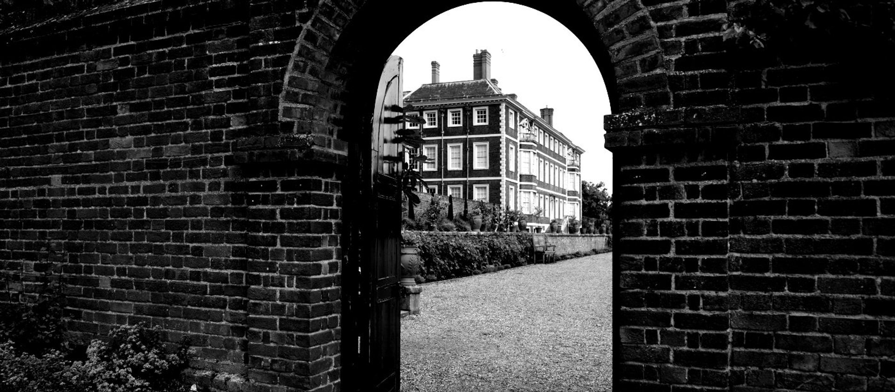

Ham House, Surrey, is thought to be one of our most haunted places.
Cold spots, the sound of footsteps and an inexplicable scent of roses have been reported at Ham House in Surrey. Glimpses of mysterious characters all around this place has won it the reputation of being one of our most haunted places.
At the centre of it all seems to be the restless spirit of Elizabeth Murray, Duchess of Lauderdale. She inherited Ham House from her father in 1655.
In life Elizabeth was ambitious and ruthless. She played a dangerous political game by being friends with both Charles II and Oliver Cromwell. Her aim was to guarantee herself a place of influence with whoever ended up in power.
She was equally strident in her personal life, taking family members to court if they crossed her.
When her first husband died suddenly she quickly married the recently-widowed John Maitland, 1st Earl of Lauderdale.
Some speculated darkly about how the suspiciously close deaths of both her husband – and the Earl’s wife – facilitated Elizabeth’s rise further up the social ladder.
But, in the end, she ran out of luck. After the death of her second husband came financial problems. This, along with ill health, forced Elizabeth to confine herself to a single ground floor apartment at Ham House.
It's on the ground floor where ghostly events seem to be concentrated. Many visitors report a strange oppressive atmosphere in the room. Pets seem reluctant to enter. There is also a large looking glass dating from Elizabeth’s time that some people say they are too scared to glance into, inexplicably afraid of what – or whom – they might see staring back.
In fact, so powerful is the force that dominates the room that staff have been known to mutter, ‘Good afternoon your ladyship’ before entering, just to be on the safe side.
In addition, a woman in black, believed to be Elizabeth, has been seen on the stairs nearby.
But Elizabeth isn’t the only spirit to haunt Ham House. The ghostly screams of a suicidal young nobleman who fell in love with – and was rejected by – a servant girl have also been heard at the property.
Are you brave enough to go on a ghost tour of one of the most haunted houses in Britain?
See all tours